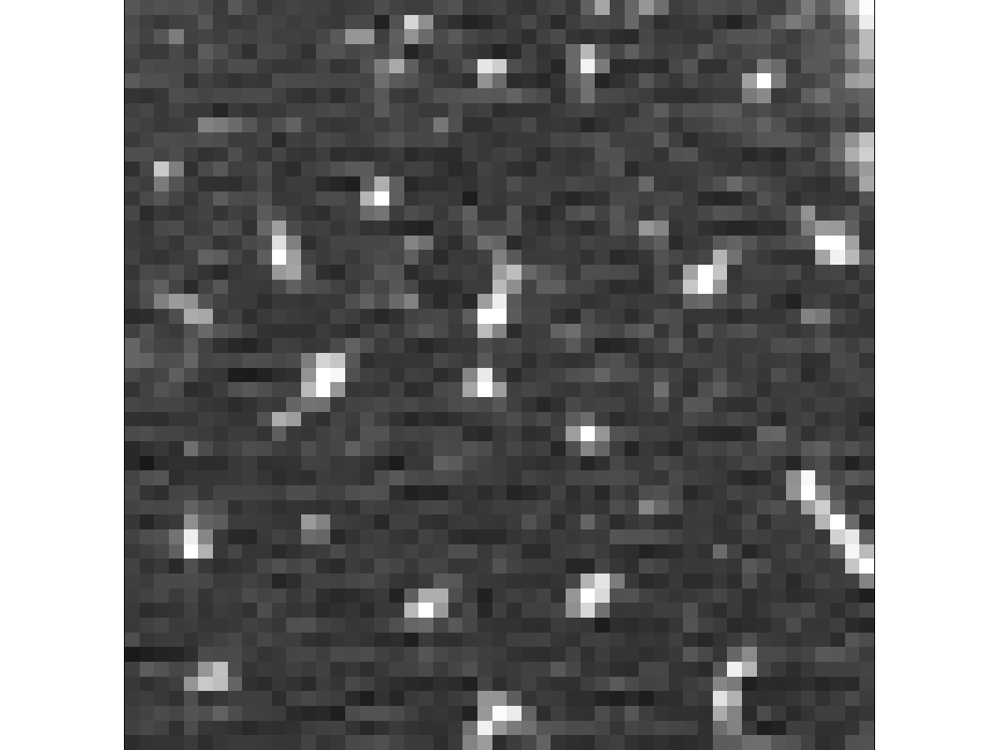
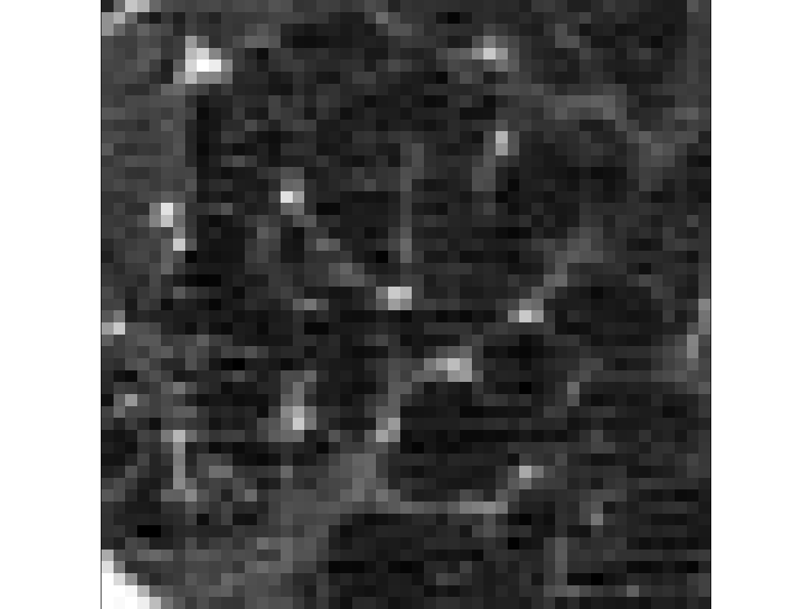
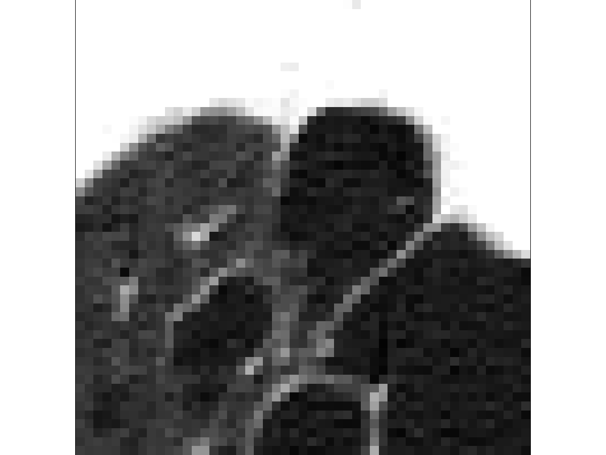

Computed Tomography Emphysema Database
This website describes and hosts a computed tomography (CT) emphysema database that has previously been used to develop texture-based CT biomarkers of chronic obstructive pulmonary disease (COPD).
Emphysema, characterized by loss of lung tissue, is one of the main components of COPD, and a proper classification of emphysematous - and healthy - lung tissue is useful for a more detailed analysis of the disease. This may, e.g., lead to improved understanding and improved computer-aided diagnosis (CAD). One way to objectively characterize the emphysema morphology is to describe the CT image intensity patterns using texture analysis techniques. Texture-based biomarkers often rely on supervised learning; hence a set of labeled examples are needed such as the data contained in this database. This area of research has received quite some attention in recent years, yet the amount of available data is limited making it impossible to judge different methods on common grounds. This is why this database is made publicly available.
Conditions
The database can be used free of charge for research and educational purposes. Redistribution and commercial use is not permitted. If you publish using data from this website (journal publications, conference papers, abstracts, technical reports, etc.), please cite the following paper:
L. Sørensen, S. B. Shaker, and M. de Bruijne, Quantitative Analysis of Pulmonary Emphysema using Local Binary Patterns, IEEE Transactions on Medical Imaging 29(2): 559-569, 2010. [PDF | BibTex]
Further, we would also appreciate if a reference to the publication using the data be forwarded to the following email address: lauges (at) diku (dot) dk. This information will be added to the list of studies using data from this database at the bottom of this website.
Description of the data
The database comprises 115 high-resolution CT (HRCT) slices as well as 168 square patches manually annotated in a subset of the slices.
CT scanning was performed using General Electric (GE) equipment (LightSpeed QX/i; GE Medical Systems, Milwaukee, WI, USA) with four detector rows and using the following parameters: in-plane resolution 0.78 x 0.78 mm, slice thickness 1.25 mm, tube voltage 140 kV, and tube current 200 mAs. The slices were reconstructed using a high-spatial-resolution (bone) algorithm. The data comes from a study group comprising 39 subjects (9 never-smokers, 10 smokers, and 20 smokers with COPD) that were all CT scanned. See [1] and [2] for more details.
Apart from the data, we also provide information about which subject each patch (in a seperate file) and each HRCT slice (in the file naming) comes from to enable appropriate cross-validation at subject level.
Slices
The 512 x 512 pixel slices were acquired in the upper, middle, and lower part of the lung of each subject. A slice was missing in two cases, hence a total of 115 HRCT slices are available.
An experienced chest radiologist and a CT experienced pulmonologist each assessed the leading pattern (either normal tissue (NT), centrilobular emphysema (CLE), paraseptal emphysema (PSE), or panlobular emphysema (PLE)) as well as the associated severity (either no emphysema or minimal, mild, moderate, severe, or very severe emphysema) in each of the 115 slices. A consensus was made in cases of disagreement. The leading pattern was later used for obtaining patch labels. The leading pattern, or label, of each slice as well as the associated severity is also available.
Patches
The 168 61 x 61 pixel patches are from three different classes, NT (59 observations), CLE (50 observations), and PSE (59 observations). The NT patches were annotated in never smokers, and the CLE and PSE ROIs were annotated in healthy smokers and smokers with COPD in areas of the leading pattern.
The largest patch size considered in [1] was 51 x 51 pixels. However, here we provide larger patches in order to enable handling of the patch border in a fashion similar to [1].
Example 51 x 51 pixel patches from the database. Left: NT. Middle: CLE. Right: PSE.
|  |
 |
 |
Resources
General
- subjects.csv (a csv-file containing the 39 unique subject ID strings)
Slices
- slices.zip (a zip-file containing the 115 CT slices of size 512 x 512 pixels in 16 bit TIFF-format*. Note that the slices are named as follows: [subject ID]_[location].tif. Location can be top, middle, or bottom)
- slice_labels.csv (the leading pattern in each of the 115 slices. The leading patterns are encoded as: 1 NT, 2 CLE, 3 PSE, 4 PLE. The first column in the csv-file is the name of the slice and the second column is the leading pattern)
- slice_severity.csv (the severity of emphysema in each of the 115 slices. The emphysema severity is encoded as: 0 no emphysema, 1 minimal, 2 mild, 3 moderate, 4 severe, 5 very severe. The first column in the csv-file is the name of the slice and the second column is the severity)
Patches
- patches.zip (a zip-file containing the 168 patches of size 61 x 61 pixels in 16 bit TIFF-format*)
- patch_labels.csv (the 168 patch labels encoded as: 1 NT, 2 CLE, 3 PSE. The labels follow the ordering of the patches in patches.zip. For example, patch1.tiff has label 1, patch60.tiff has label 2, and patch110.tiff has label 3)
- patch_subjects.csv (information about which subject each patch is from. The subjects are identified by the subject ID string. Note that the number of patches from each subject varies)
* Please note that some programs cannot handle 16 bit TIFF images properly, causing the slices and patches to be converted to/displayed as binary (they are grayscale). Examples of programs the can handle the data properly include: Matlab and ImageJ. The first 15 columns in the first row of patch1.tiff should contain the following intensities in order to be correct: 374, 126, 182, 208, 223, 684, 927, 1201, 1346, 1103, 581, -37, -532, -614, -686.
References
- [1] L. Sørensen, S. B. Shaker, and M. de Bruijne, Quantitative Analysis of Pulmonary Emphysema using Local Binary Patterns, IEEE Transactions on Medical Imaging 29(2): 559-569, 2010.
- [2] S. B. Shaker, K. A. von Wachenfeldt, S. Larsson, I. Mile, S. Persdotter, M. Dahlbäck, P. Broberg, B. Stoel, K. S. Bach, M. Hestad, T. E. Fehniger, and A. Dirksen, Identification of patients with chronic obstructive pulmonary disease (COPD) by measurement of plasma biomarkers, The Clinical Respiratory Journal 2(1): 17-25, 2008.
Studies using data from this database
This is a list of studies using data from this database. In some cases, only a subset of the data is used.
- A. Sriram, S. Kalra, H. R. Tizhoosh, Projectron - A Shallow and Interpretable Network for Classifying Medical Images, CoRR abs/1904.00740, 2019.
- A. Aggarwala, S. Sharmab, K. Singha, H. Singhc, S. Kumar, A new approach for effective retrieval and indexing of medical images, Biomedical Signal Processing and Control 50: 10-34, 2019.
- M. A. Ibrahim, O. A. Ojo, P. A. Oluwafisoye, On Feature Selection Methods for Accurate Classification and Analysis of Emphysema CT Images, International Journal of Medical Imaging 5(6): 70-78, 2018.
- M. A. Ibrahim, O. A. Ojo, P. A. Oluwafisoye, Identification of emphysema patterns in high resolution computed tomography images, Journal of Biomedical Engineering and Informatics 4(1): 16-24, 2018.
- A. Kallel, A. B. Hamida, A new adaptive gamma correction based algorithm using DWT-SVD for non-contrast CT image enhancement, IEEE Transactions on NanoBioscience 16(8): 666-675
- Y. Kumar, A. Aggarwal, S. Tiwari, K. Singh, An efficient and robust approach for biomedical image retrieval using Zernike moments, Biomedical Signal Processing and Control 39: 459-473, 2018.
- V. Srivastava and R. K. Purwar, A Five-Level Wavelet Decomposition and Dimensional Reduction Approach for Feature Extraction and Classification of MR and CT Scan Images, Applied Computational Intelligence and Soft Computing 2017, 2017.
- M. Nishio , K. Nakane, T. Kubo, M. Yakami, Y. Emoto, M. Nishio, K. Togashi, Automated prediction of emphysema visual score using homology-based quantification of low-attenuation lung region, PLoS One 12(5): e0178217, 2017.
- L. Peng, L. Lin, H. Hu, X. Ling, D. Wang, X. Han, Y.-W. Chen, Joint Weber-Based Rotation Invariant Uniform Local Ternary Patterns for Classification of Pulmonary Emphysema in CT Images, IEEE International Conference on Image Processing (ICIP), 2017.
- G. Agarwal, S. P. Mishra, S. Maurya, S. Chaudhary, S. Murala, Local peak valley co-occurrence patterns: A new feature descriptor for image retrieval, International Conference on Signal and Information Processing (IConSIP), 2017.
- S. R. Dubey, Robust Image Feature Description, Matching and Applications, PhD Thesis, IIIT Allahabad, 2016.
- N. Brancati, D. Gragnaniello, L. Verdoliva, Scale Invariant Descriptor for Content Based Image Retrieval in Biomedical Applications, International Conference on Signal-Image Technology & Internet-Based Systems (SITIS), 2016.
- J. Yang, X. Feng, E. D. Angelini, A. F. Laine, Texton and Sparse Representation Based Texture Classification of Lung Parenchyma in CT Images, International Conference of the IEEE Engineering in Medicine and Biology Society (EMBC), 2016.
- Q. Feng, Y. Zhou, Kernel Combined Sparse Representation for Disease Recognition, IEEE Transactions on Multimedia 18(10): 1956-1968, 2016.
- G. L. B. Ramalhoa, D. S. Ferreiraa, P. P. R. Filhoa, F. N. S. de Medeiros, Rotation-invariant Feature Extraction using a Structural Co-occurrence Matrix, Measurement 94: 406-415, 2016.
- M. Ibrahim and R. Mukundan, Analysis of scale variations of local features for accurate classification of Emphysema images, IEEE International Conference on Biomedical Engineering and Informatics (BMEI), 2015.
- S. R. Dubey, S. K. Singh, R. K. Singh, Local Diagonal Extrema Pattern: A New and Efficient Feature Descriptor for CT Image Retrieval, IEEE Signal Processing Letters 22(9): 1215-1219, 2015.
- E. M. Karabulut and T. Ibrikci, Emphysema discrimination from raw HRCT images by convolutional neural networks, IEEE International Conference on Electrical and Electronics Engineering (ELECO), 2015
- R. Nava, J. Olveres, J. Kybic, B. Escalante, G. Cristóbal, Feature Ensemble for Quantitative Analysis of Emphysema in CT imaging, IEEE International Conference on E-Health and Bioengineering (EHB), 2015
- R. P. da Rosa, M. A. Porto, A. Kozakevicius, Classificador de imagens de pulmão utilizando wavelets de Haar e distância de Mahalanobis, Revista de Informítica Teórica e Aplicada 22(2), 2015
- R. P. da Rosa and M. d'Ornellas, An Optimized Superpixel Clustering Approach for High Resolution Chest CT Image Segmentation, Studies in health technology and informatics, 2015.
- M. A. Porto and M. d'Ornellas, Automated Image Retrieval of Chest CT Images Based on Local Grey Scale Invariant Features, Studies in health technology and informatics, 2015.
- X. Pei, Emphysema Classification Using Convolutional Neural Networks, Intelligent Robotics and Applications (ICIRA), 2015.
- M. Ibrahim and R. Mukundan, Cascaded techniques for improving emphysema classification in computed tomography images, Artificial Intelligence Research, 2015.
- S. R. Dubey, S. K. Singh, and R. K. Singh, Local Bit-plane Decoded Pattern: A Novel Feature Descriptor for Biomedical Image Retrieval, IEEE Journal of Biomedical and Health Informatics, 2015.
- M. Ibrahim and R. Mukundan, Multi-fractal Techniques for Emphysema Classification in Lung Tissue Images, International Conference on Environment, Chemistry and Biology (ICECB), 2014.
- T. Azim and M. Niranjan, Texture Classification with Fisher Kernel Extracted from the Continuous Models of RBM, International Conference on Computer Vision Theory and Applications (VISAPP), 2014.
- F. Bianconi and A. Fernández, An appendix to "Texture databases - A comprehensive survey", Pattern Recognition Letters 45(1): 33-38, 2014.
- R. Nava, B. Escalante-Ramírez, G. Cristóbal, and R. S. J. Estépar, Extended Gabor approach applied to classification of emphysematous patterns in computed tomography, Medical & Biological Engineering & Computing, 2014
- C. Dharmagunawardhana, S. Mahmood, M. Bennett, and M. Niranjan, Quantitative analysis of pulmonary emphysema using isotropic Gaussian Markov random fields, International Conference on Computer Vision Theory and Applications (VISAPP), 2014
- R. Nava, J. V. Marcos, B. Escalante-Ramirez, G. Cristóbal, L. U. Perrinet, and R. S. J. Estépar, Advances in Texture Analysis for Emphysema Classification, Iberoamerican Congress on Pattern Recognition (CIARP), 2013.
- C. Chen, L. Sørensen, F. Lauze, C. Igel, M. Loog, A. Feragen, M. de Bruijne, and M. Nielsen, Towards Exaggerated Emphysema Stereotypes, SPIE Medical Imaging, 2012.
- L. Sørensen, M. J. Gangeh, S. B. Shaker, and M. de Bruijne, Texture classification in pulmonary CT, Lung Imaging and Computer Aided Diagnosis, CRC Press, Taylor & Francis Group, 2011.
- L. Sørensen, S. B. Shaker, and M. de Bruijne, Quantitative Analysis of Pulmonary Emphysema using Local Binary Patterns, IEEE Transactions on Medical Imaging 29(2): 559-569, 2010.
- M. J. Gangeh, L. Sørensen, S. B. Shaker, M. S. Kamel and M. de Bruijne, Multiple classifier systems in texton-based approach for the classification of CT images of lung, Medical Computer Vision 2010: Recognition Techniques and Applications in Medical Imaging, 2010.
- M. J. Gangeh, L. Sørensen, S. B. Shaker, M. S. Kamel, M. de Bruijne, and M. Loog, A texton-based approach for the classification of lung parenchyma in CT images, Medical Image Computing and Computer Assisted Intervention (MICCAI), 2010.
- L. Sørensen and M. de Bruijne, Dissimilarity representations in lung parenchyma classification, SPIE Medical Imaging, 2009.
- L. Sørensen, S. B. Shaker, and M. de Bruijne, Texture classification in lung CT using local binary patterns, Medical Image Computing and Computer Assisted Intervention (MICCAI), 2008.
- L. Sørensen, S. B. Shaker, and M. de Bruijne, Texture based emphysema quantification in lung CT, The First International Workshop on Pulmonary Image Analysis, 2008.
Contact
Please forward any questions to the following email address: lauges (at) diku (dot) dk
This website is copyright © 2013 - 2019 Lauge Sørensen, Saher B. Shaker, and Marleen de Bruijne.